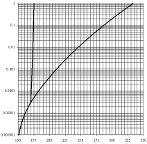
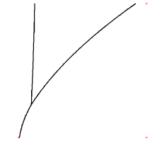

Grid lines in an original image interfere with the automatic line and point detection algorithms in Engauge Digitizer. In most cases, however, the grid lines can be quickly removed using one of the grid removal features offered by Engauge Digitizer. The resulting processed image can be automatically digitized using Segment Fill and Point Match.
Here is an example of how grid removal can clean up an image:
|  |  |
| Before Grid Removal | After Grid Removal |
By simply changing the Grid Removal settings, grid lines can usually be removed.
Use the Settings/Grid Removal dialog to experiment with various discretizing settings. You can get more information about the Grid Removal dialog.